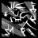
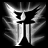

+ Paladin +
THE PALADIN
The Median XL paladin class is an armour-clad heavyweight who can take a beating and return the favours with physical and elemental melee attacks and spells.

BACKGROUND OF THE MEDIAN XL PALADIN
After the fall of the Hand of Zakarum, the paladin orders disbanded one by one or were torn apart by internal conflicts. The weakening influence of the central Church in Kehjistan and the mysterious disappearance of the Que-Hegan only contributed to the chaos.
The faithful of the Light looked elsewhere for answers and banded together around the new prophets. From the ashes of the old orders, two sects with a radically different interpretation of the Akaran scriptures and diametrically opposite morals arose. Although many feared for a holy war, the leaders of the sects agreed to close their ranks and work together against the common foe unfettered by infighting and distrust.
The Covenant of the Golden Flame, led by a prophet who claims to receive instructions directly from the angel Auriel, preaches unity and brotherhood among the faithful of Zakarum and the destruction of those who work against the Church. By joining forces against the demonic legions, the armies of Man and Angel would be able to deliver the death blow to the Burning Hells.
The sinister Black Sun Cult, under the command of an avatar of the angel Imperius, sees mankind as inherently unstable and prone to fall to demonic temptation. For the High Heavens to win the Eternal War, its acolytes argue, humanity must be cleansed from Sanctuary.
cholars believe that the schism between the two orders heralds an all out civil war in the High Heavens about the fate of Sanctuary. But all agree that whatever the outcome, it is in humanity’s best interest to banish all influence of the Burning Hells from Sanctuary...
BASE STATS
Chance to block: 2%
Strength: 25
Dexterity: 20
Vitality: 25 (75 life)
Energy: 15 (15 mana)
+30 life, +10 mana per level
Gains +3 life per point into vitality
Gains +2 mana per point into energy
PREFERRED WEAPONS
The holy warriors of the Covenant prefer heavy one-handed or two-handed crushing weapons to shatter the bones of their enemies. Only the Covenant’s champions can wield the order’s powerful maces and hammers, blessed in the holy waters of the Argentek for maximum impact.
Although a less common sight, some champions of the Church are seen wielding jousting lances. While lacking in speed, they enable the wielder to attack from a safe distance, avoiding most counterattacks.
The Black Sun Cult has less restrictive morals and is eager to do whatever it takes. Despite the corrupting influence of the arcane, the Cult’s warriors are trained in the use of magically charged channelling sceptres in melee and elemental combat.
Class-specific 1h weapon: Paladin Hammer
Class-specific 2h weapon: Paladin Maul (On hit: Amazing Grace)
Class-specific 2h weapon: Paladin Spear (On hit: Amazing Grace)
Also uses swords and scepters
PREFERRED ARMOUR
The Church is famous for its high quality shields, but many paladins eschew the use of a shield altogether. A true defender of the Light does not hide behind a shield, but challenges his enemies to strike first and then retaliates with decisive force.
The blackguards and shadowpriests of the Black Sun Cult on the other hand have no qualms about using a shield to protect themselves and their own interests and consider the two-handed combat style of the Covenant foolish and suicidal.
A distinctive feature of the paladin orders in battle are their full helms emblazoned with the order’s crest. The Covenant prefers the protection of the impenetrable steel hundsgugel helm, whereas the Cult goes for the intimidation factor of a large horned death’s head.
Class-specific shield: Paladin Shield
Class-specific helm: Paladin Helm
THE IRON CURTAIN
Although there is an uneasy peace between the two paladin orders, neither side has much love for the other and those who prefer to learn both doctrines would probably be treated as traitors and burned by the Covenant or flayed alive by the Cult.
You have to choose between holy and unholy skills. Neutral skills are allowed for both sides.
HOLY MELEE SKILLS
| Name | Icon | Effect |
|---|---|---|
| Retaliate |  |
A defender of the Light never strikes the first blow, but it is his holy plight to defend
himself and viciously strike back against those who seek to commit wrongs against him. Effect: melee attack that releases a shockwave when struck |
| Hammerstrike |  |
The knight of the Golden Flame is the Light's judge, jury and executor on the mortal plane,
bringing the hammer of justice down upon the spawn of hell. Effect: melee attack that hits an area and has a % to deal massive damage |
| Merkabah |  |
To the faithful, the Light is a soothing blessed glow. To the wicked, it is a burning eye of
final judgement, searing their flesh and spirit and eradicating them from this world Effect: when active, periodically deals magic damage in a radius |
| Lionheart |  |
The faithful of Zakarum need not fear evil, for the Light is with them. A paladin of the Church
never runs and never retreats until justice has been carried out Effect: increases damage and defence but slows running speed |
| Colosseum | Sanctifying the ground on which he chooses to make his stand, with the flame of Zakarum in his
heart a single dragon knight can ward off an army. Effect: crash into target and raise an arena of fire that weakens enemies |
HOLY CASTER SKILLS
| Name | Icon | Effect |
|---|---|---|
| Searing Glow | The Covenant crafts weapons and shields with carefully polished mirrors and lenses to focus the
light of the sun onto an enemy, blasting the target with heat and holy force. Effect: damages and dazzles the target and nearby enemies |
|
| Ring of Light | None shall pass! The initiate cleric raises a circle of holy fire to ward off evil. Those
foolish enough to defy his authority are sent back to the Hells whence they came. Effect: creates a ring of holy fire |
|
| Brimstone | Created to protect the sanctuaries of the Light, this warding rune is triggered by the presence
of evil, immolating those who seek to harm the Covenant. Tremble in fear, witches and demons,
the burning times are upon thee! Effect: magical ward at target area that explodes into holy fire |
|
| Glittering Regalia | Suspected heretics captured by the Golden Flame are graciously offered two ways to show their
faith: allow the Covenant to relieve them of the corruptive burden of their material wealth, or
face the sacred fire. Passive effect: gain spell damage based on gold carried |
|
| Rising Dawn | All good things come from above. The morning sun symbolises Zakarum's power, unfurling his
heavenly fire in the sky to banish the beasts of darkness back to the black pits where they
belong. Effect: slow moving sun damages enemies underneath with its rays |
UNHOLY MELEE SKILLS
| Name | Icon | Effect |
|---|---|---|
| Terror Strike |  | Not all of the Cult's miracles are divine. Even a novice blackguard knows how to empower his
weapon with elemental force and launch a devastating strike while protecting himself with black
metal armor from thin air. Effect: melee attack that empowers increases spell damage and defense |
| Lemures | Zakarum is the beacon of all that is good and just. For those not among His faithful, all that
awaits them after their fall from grace is the eternal darkness of the Void. Effect: melee attack that unleashes homing cold spirits |
|
| Black Sleep | The initiate blackguard possesses the mind of an enemy with terrifying visions. The Black Sleep
of Khalim Ma forces the victim to redeem itself by unwillingly aiding the cause of the
Light. Effect: melee attack that converts enemy to fight evil |
|
| Blood Thorns |  |
Prophet Akarat died for humanity's sins, and the blackguard of Zakarum is determined to make the
heathen spawn of Hell die for theirs. Effect: melee attack that unleashes burning nails |
| Hymn |  |
Singing this sinister chant to Zakarum, the paladin and his brothers are blessed for each drop
of heathen blood spilled. Effect: party gains life on successful melee attacks |
UNHOLY CASTER SKILLS
| Name | Icon | Effect |
|---|---|---|
| Tainted Blood | The Cult's harsh food regime, mostly consisting of heathen flesh, prepares them for the reality
of having to survive on dubious mushrooms and toxic spiders on the field. Effect: infects caster or target ally with healing poison |
|
| Mind Flay |  |
With a dark prayer, the adept shadowpriest unleashes a storm of divine fire and lightning to
melt the faces of those who stand against the Cult. Effect: chaos energy beam that explodes on the target |
| Symphony Of Destruction |  |
The cleansing of this world is as an unstoppable rock that rolls down from Mount Zakarum to
strike down the pagans with thunder and lightning, power and might. Effect: when active, nearby enemies randomly explode into gibs |
| Slayer |  |
He who rejects the authority of the Light will forever be haunted by nightmares of the Cult's
creatures clawing at him and dragging him down into Hell to burn. Effect: shadow creature guards an area with unholy bolts |
| Stormlord | Where the Covenant preaches modesty and humbleness before the Light and their fellow men, the
Black Sun Cult believes that a warrior of Heaven has nothing to be ashamed of. Seize the power
before the enemy does. Passive effect: bonus to all attributes |
NEUTRAL SKILLS
| Name | Icon | Effect |
|---|---|---|
| Vessel of Judgement | Even the most novice paladin walks with the power of Zakarum, his presence striking down the
forces of Hell where they stand. Effect: automatically casts energy bolts at nearby enemies |
|
| Rapture |  | Free of earthly limits, the paladin reaches his full God-given potential, mowing down the
enemies of the Light like an avenging whirlwind from heaven. Effect: temporarily increases all character speeds |
| Light and Shadow |  |
Meditation in his order’s martial temple strengthens the holy knight's aura of righteousness or
hatred, empowering the physical ethereal manifestation of his resolve. Passive effect: improves your Vessel of Judgement based on alignment |
| Sacred Armor | Zakarum protects His faithful in times of need. With the subtle aid of His spirits, the
paladin's enemies fumble and manage to strike only glancing blows. Effect: temporary invulnerability shield |
|
| Scourge | There is no justice like angry mob justice. The farmers and workers of Westmarch stand ready to
aid in the battle against the unholy menace. Effect: summons zealous followers |
UBERSKILLS
You may choose a single uberskill at character level 90.
| Name | Icon | Effect |
|---|---|---|
| Resurrect | The embrace of Zakarum represents love, compassion and forgiveness. Even those shown the Light
after the most heinous crimes are granted a chance to redeem their wrongs by the grace of
Zakarum. Effect: raises dead monsters to fight for you |
|
| Superbeast |  |
Giving himself over to the spirits of the Shadow, the paladin of the Cult slaughters his enemies
in the throes of holy madness. Effect: turns caster into a shadowfiend, increasing all speeds |
| Plague | The black death of Zakarum cleanses the land, consuming the pagan and godless and leaving only
the honourable and faithful in its wake. Passive effect: adds poison to weapon attacks |
ENNEAD SKILL
After completing the Ennead Challenge and keeping the Class Charm in the inventory while at character level 90 and above, you can invest points in this skill.
See THIS PAGE for more information about the Ennead Challenge.
| Name | Icon | Effect |
|---|---|---|
| Divide Apparition |  |
Like a deus ex machina, the paladin of Zakarum descends upon the battlefield, his mere
appearance chilling his heathen enemies to the bone. Effect: teleport to target location and freeze enemies |
BLACK ROAD SKILL
After completing the Black Road Challenge and keeping the Class Charm in the inventory, you can invest points in this skill.
See THIS PAGE for more information about the Black Road Challenge.
| Name | Icon | Effect |
|---|---|---|
| Blessed Life |  |
A life of worship teaches the warrior of Zakarum the futility of evil. The denizens of hell are
but vermin to an emissary of the Light. Passive effect: reduces damage taken and speeds up healing apples |
INNATE SKILL
Paladins start with the following skill in their icon list.
| Name | Icon | Effect |
|---|---|---|
| Vindicate |  |
Zakarum rewards those who fight selflessly for all that is good and just. It is said that the
Light blesses his greatest champions with eternal life and the power to fight forever as a hero
of justice. Curse effect: killing cursed foe heals party and increases damage |